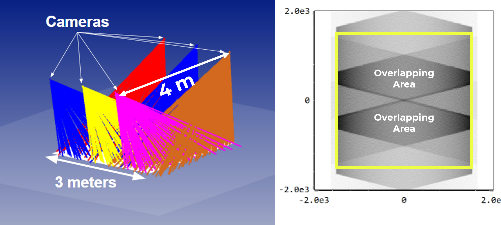

The next-generation Very Large Array (ngVLA) radio telescope aims to produce 250, 18-meter aperture telescope in the next decade. This telescope will be able to resolve objects in the sky, like black holes, in a way that has never been seen before. This telescope is bound to advance humanity's understanding of fundamental physics. Building this many telescopes in such a short time is no easy feat. With each panel sizing up at roughly 2-2.5 m, the entire array will consist of about 18,000 total panels. This means that for the next decade, nearly 10 panels per working day need to be made to stay on schedule. With CMMs taking hours to perform a single measurement on these panels, a new method was needed to avoid the process bottleneck.
FringeScan-3m
In November 2024 we delivered our largest system yet to mtex Antenna Technology Gmbh: FringeScan-3m. The system utilized 6 cameras (three cameras pairs) and an installation-caliber projector that all work in unison to cover the entire 3 meter area with a measurement time of just a few minutes.

← Back to Blog